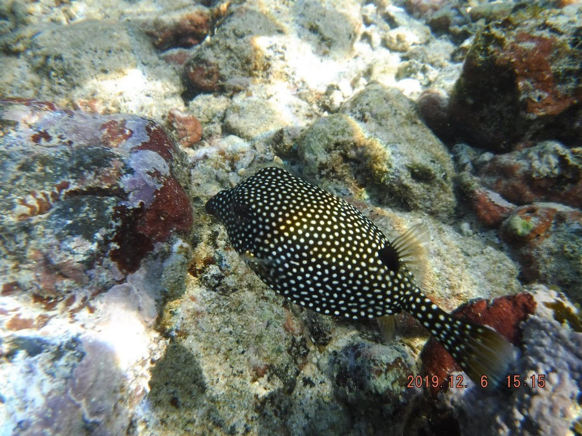
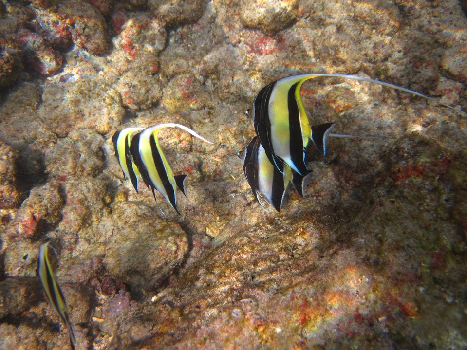

Snorkeling
I was fortunate enough to travel in some wonderful places. While I travelling, I love when I encounter the opportunities to do some snorkeling. I always have a bathing suit in the car during a road trip in case I encounter a nice bay to encounter some beautiful tropical fishes!

Fish 1 |

Moorish Idol |

Fish 3 |

Fish 4 |
- Moorish Idol
- Moorish idols, with their wide vertical yellow, white, and black stripes, tapered nose, and tall thin dorsal fin, are one of the most recognizable fish on the reef. This species has even become famous on the big screen! One moorish idol you may be familiar with is Frank, the tough leader of the aquarium residents voiced by Willem Dafoe in the film “Finding Nemo.” (Just an FYI, real live moorish idols don’t do well in tanks, either.) Moorish idols can grow fairly large, attaining a length of over eight inches – and that on a primary diet of sponges. Pretty awesome, right?
- Humuhumunukunukuapua'a
- You will find this stocky, multicolored fish cruising many of Hawaii’s reefs, pushing itself around using the fins on its back and belly. Its body is shaped almost like a parallelogram with a blue mustache, a blue and black striped cap, and a fan-shaped tail attached by a dark sideways “V” outlined in gold (the wedge). These fish are usually shy, but if guarding a nest, they have been known to bite snorkelers. Their magnificent Hawaiian name – a tongue-twister for many non-native speakers – has elements meaning “to stitch pieces together” and “nose like a pig.” When stressed, these fish can make a pig-like sound. The idea of stitching may speak to their various colors and shapes. Not an endemic species, the wedgetail triggerfish became the Hawaii state fish waaaaaay back in 1985 – by popular vote!
From :https://bossfrog.com/hawaii-fish-guide/
- Long-Spined Venomous Sea Urchins
- Coral Cuts and Abrasions
- Conus – Deadly Sea Snails
- Portuguese Man-O-War
- Winged Box Jellyfish
- Dangerous Bacteria
From : https://www.livinginhawaii.com/hawaiis-dangerous-marine-animals/
Rock Collecting
Not everything needs to be professional, I just love to collect them just because they look beautiful. I have 3 shelves of them at home. As a geologist I could learn a lot about them but I prefer to keep it casual!
Bicycling
I do not bike as much as I should or want but during the pandemic, I was able to go many times with my 7 years old daughter on "long" bike rides along the river. I just enjoy the time shared with my family!

Discovery Ridge Pond |